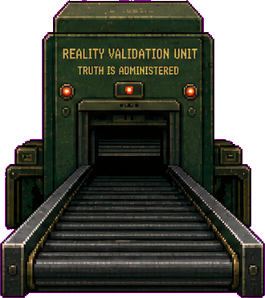
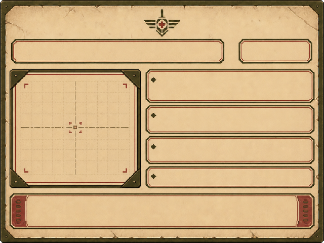

PERSON-XU / 25
许桥
文件递送员。医院登记说他准时，机器却说他晚了二十三分钟。
许桥因为“迟到”失去医疗通行，杜春梅因为“排序”可能失去净水；两宗案件最终指向同一个事实：机器记录的时间和资源优先级都可以由人调整。

伤者看到拒绝，照护者看到排序，技术人员看到可调参数，老人记得被系统删除的人。
文件递送员。医院登记说他准时，机器却说他晚了二十三分钟。
记得一些已从系统消失的人名，却无法稳定给出可受理的证词。
只关心母亲能否拿到药与净水，不相信追查旧事可以解决今天。
北陆籍验收机技师。他执行过人工校时，却没有看到完整命令链。
大量医疗、污染和劳动材料在截止线附近送达。上级以“设备同步”为名要求人工调整时间，使未经确认的事故材料无法自动入档。宋铎执行了技术命令，但不知道完整行政目的；许桥的医疗急件与一批事故文件因此被判迟到。
四宗案件分别训练时间、身份、境外互惠与资源排序，最后让技术异常产生人物后果。
许桥申请宵禁后前往第五诊疗站复查工伤。
身份证明、医院急件证明、通行申请。
医院登记在截止前，验收回执晚了二十三分钟。
驳回使伤势恶化；复核可能让他错过当晚诊疗。
杜春梅申请让周循代领，却写下一个系统不存在的人名。
旧领取人无法与当前家庭关系记录对应。
她声称事故当晚接通过那个人的电话。
“系统不存在”不再自动等于“现实不存在”。
宋铎申请延长维护验收机期间的境外专家居住许可。
北陆互惠暂停，只有紧急维修令可形成例外。
维修令附带事故当夜的“人工时间同步”记录。
是否保留这份与居住申请目的无关的技术记录。
杜春梅需要最后一个高优先级净水与医疗验收位。
身份、住所、慢性病卡和医院急件均有效。
系统提示该位置可能被主管保障券预留。
技术问题变成“谁被系统判定更重要”的问题。
杜春梅的记忆只能指路；真正改变规则判断的是不同机构留下的时间痕迹。



没有一种选择能同时保持程序整洁、及时救助与证据完整。
程序记录最整洁。许桥伤势恶化，宋铎不再主动提供材料，第七天缺少系统异常证据。
许桥获得通行，方澄信任提升；监察记录玩家以人工文件覆盖机器回执。
证据最完整，但人物承受等待。许桥可能继续投递并再次受伤。
杜春梅暂时占据名额；第七天保障券出现时，玩家必须撤销自己的决定或公开拒绝特权。
机器不是反派，它只是把不愿署名的决定稳定执行。
不要把验收机写成拥有恶意的人工智能。
不要把完整责任推给宋铎一个技术执行者。
不要把杜春梅不稳定的记忆直接当作合法证据。
不要只用抽象数值解释资源冲突，要显示谁失去什么。